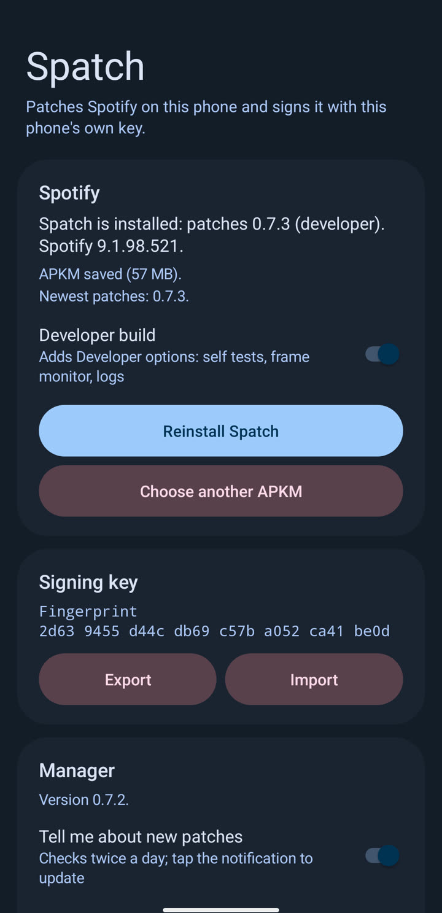

Unofficial · cosmetic · open source
Spotify, in Material You.
Spatch redesigns Spotify for Android: circular album art with a slowly turning scalloped ring, a player that moves with the music, eight themes plus one from your wallpaper, your own fonts, and a widget that blends into your home screen.


Everything you touch
A full redesign, not a skin.
Spatch reaches into Spotify's own screens and rebuilds the parts you use every day, then gives you a settings page to shape every detail.
A living player
Circular or shaped artwork, a wavy progress bar, a glow from the album's colour, a ring that pulses with the bass, and an immersive full-screen view.
Themes & fonts
Lavender, Gruvbox, Catppuccin, Rosé Pine, Nord, Tokyo Night, Dracula, Gruvbox Material, or your wallpaper's colours. Pick a font or import your own.
Every screen
Material You 3 vector icons, floating navigation bar with detached quick menu, sliding filter pills, elevated cards on Library and playlists, and themed headers.
Motion & feel
Springy presses, tap ripples, haptics, a spinning mini-player cover and bursts on the play button. Calm them down or turn them all on.
Home-screen widget
A Material You widget with a morphing play button and a bouncing equaliser, optionally coloured from your wallpaper.
Less clutter
Hide podcasts, audiobooks, Home sections and side-menu rows you never use. Free accounts can hide the Premium tab.
How it works
Patched on your phone. Signed by your phone.
Spatch Manager takes the Spotify version Spatch supports, applies the newest patches and signs the result with a key that never leaves your phone. Updates arrive as a notification and install in one tap.
- verifiedChecked at every step. Every file is matched against its exact SHA-256, so what you install is exactly what the patches describe.
- lockNo accounts, no servers. Nothing is uploaded; the manager only downloads patches from GitHub.
- boltQuick updates. Later updates replace one APK and skip the confirmation screen on Android 12 and newer.

Cosmetic by design.
Spatch changes how Spotify looks and moves. It doesn't unlock Premium, skip ads or touch your account, and it never ships Spotify's own files: you bring your own copy.